Using the Virtual Engineering Suite within a Desktop Environment |
| 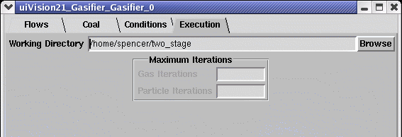 | Before using the VE viewer, module data must first be properly stored. The user must specify a working directory for data storage under the execution folder (shown at left) of a compatible module's User Interface (UI module button). |
Once a network has been executed and the module data has been properly stored, the user may then select the "VE" module button (example below) to open the Virtual Engineering Suite. The VE Suite title page shown at right is then displayed and by selecting Launch the viewer converts the stored CFD data files in the working directory into VE-compatible VTK files. Several minutes are required to complete the conversion process. 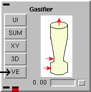
This title page remains dormant in the background while using the VE viewer. Selecting the End button will close the viewer and end the VE Suite session. |
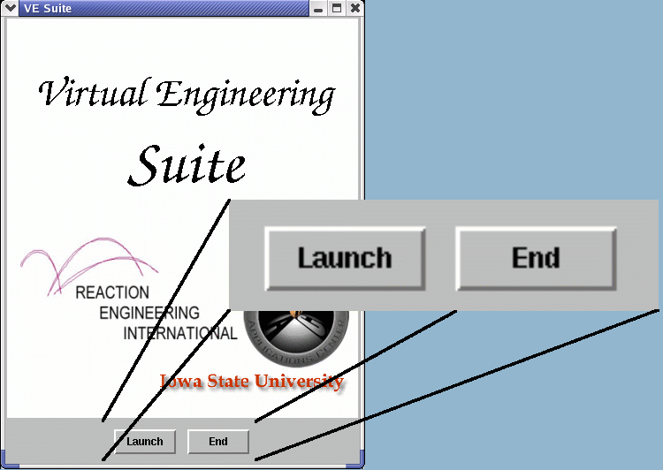 |
| 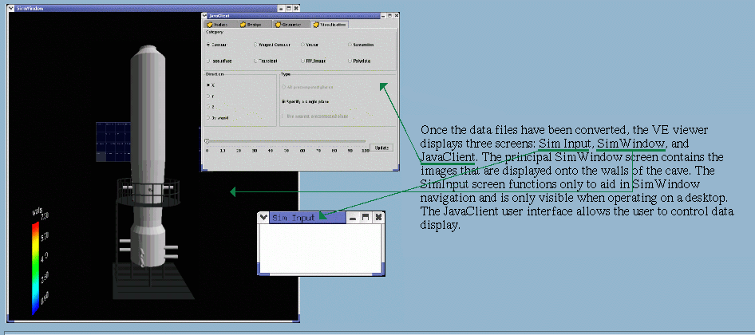 |
The SimWindow Display ScreenOn the left side of the SimWindow display screen a color scheme legend is provided. This color gradient is used to display varying values of a given datatype. The top number represents a maximum value while the bottom number represents a minimum value. All data above the maximum value will be shaded red and, likewise, all data below the minimum value will be shaded blue. Data falling between these values is shaded according to the color scheme. The distant table (projected on the rear wall) displays user options normally selectable with the wand within a cave. These same user options are accessible to a desktop user within the JavaClient user interface screen. Navigation within the SimWindow Display ScreenThe SimInput screen serves as the input device for navigation and must be active. Navigation within the SimWindow display screen is purely translational (no rotation), and is supported by the following keys on the keyboard:
|
Stop animation.
|
| 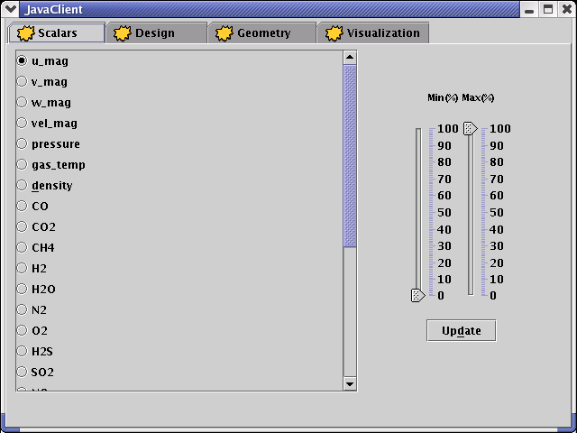 | Scalars FolderThe VE viewer can be used to trace a variety of data including gas direction, velocity, pressure, temperature, density, and specie concentration. This first folder within the JavaClient user interface governs which datatypes are displayed. From the data field on the left the user can select one datatype for display. The Scalars folder also controls the method by which data is shaded in the SimWindow screen. The sliding bars on the right regulate the data maximum and minimum based on percentages of the absolute maximum and minimum. For example, in the color scheme illustrated in the above SimWindow snap, the default maximum is 3200 and the minimum is 400. This means that the highest computed gas temperature for the module was 3200 K and the lowest computed temperature was 400 K. By moving the minimum sliding bar up towards 50, the data range narrows and provides a more detailed representation of temperature values in the upper half of the absolute temperature range. The SimWindow screen is not updated until Update is selected. |
Design FolderThe Design folder is still in development and is not yet functional. It will potentially allow the user to utilize visualization capabilities of the VE Suite in order to manipulate unit geometry and specifications before initializing CFD calculations. This would allow the user to fully parametrize a problem by working from a config-type file. |
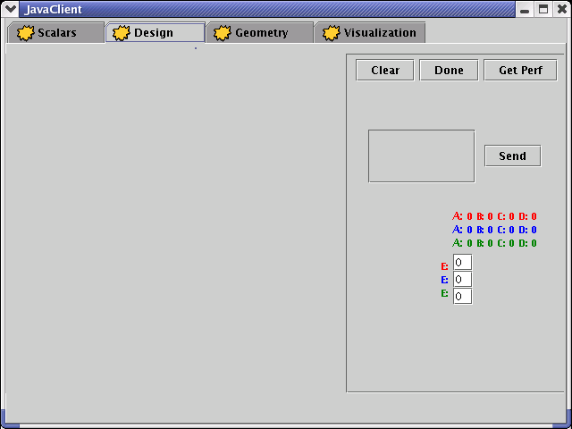 |
| 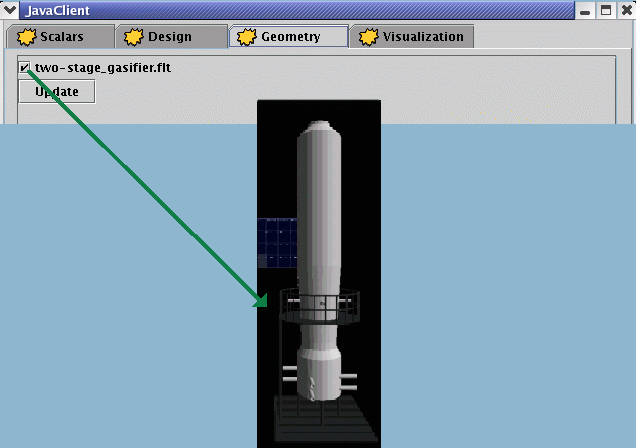 | Geometry FolderThe Geometry folder allows the user to toggle the display of unit geometry. When selected, the viewer displays a simplified representation of the unit itself (gasifier shown at left) inside the SimWindow screen. Unit geometry will not obstruct data--it becomes nearly transparent when data is displayed. Again, the SimWindow will not be updated until the Update button is selected. |
Visualization FolderCategoryThe VE Suite offers several methods of data display. The user may choose one of the following categories:
DirectionFor those categories that display data along a unit cross-section (i.e. contour, warped contour, transient, vector, PIV_Image), the direction field regulates the method by which the two-dimensional plane is generated. The Cartesian axes listed represent normals to the planes displayed. For example, when the Y axis is selected, the planes will run perpendicular to the Y axis (parallel to the monitor's screen). 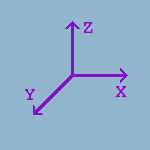
The user may also generate cross-sectional planes that are not orthogonal to the defined axes using the wand (By wand option). When selected, the viewer generates a plane normal to the direction of the pointed wand. Sliding BarThe values beneath the sliding bar represent percentages. This bar is used to control data display by regulating the position of cross-sectional planes or the value by which isosurfaces are generated. |
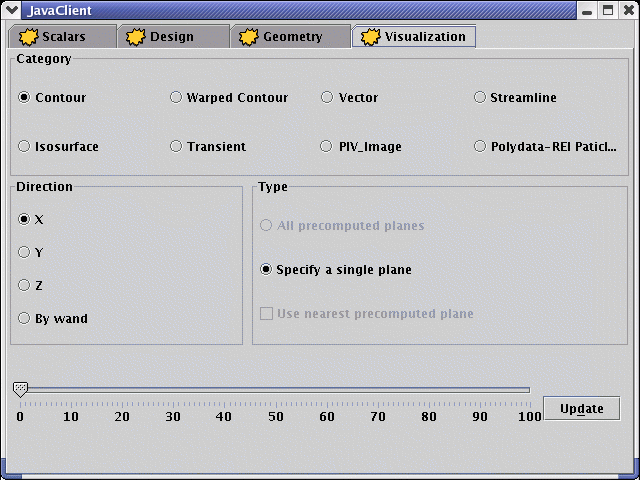 |
ContourThe Contour category generates a cross-sectional plane running through the unit. Data is then projected onto this plane using the color-shading scheme to represent varying values. The sliding bar regulates the position of the cross-sectional plane. For example, planes run from left (value=0) to right (value=100) along the X-axis. The value of 50 (displayed at right) creates a plane centered in the middle of the unit. Similarly, planes run from base to top along the Z-axis, and from front to back along the Y-axis. |
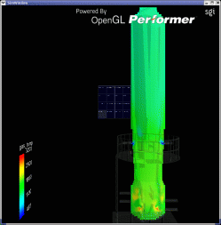 |
| 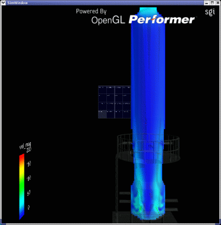 | Warped ContourThe Warped Contour category works similarly to the Contour category. In contrast, however, the Warped Contour warps the contour according to the local velocity vector. Instead of simply shading data along the 2D cross-section, data is extruded to its respective value on the contour. |
The Transient, Vector, and PIV_Image categories all operate similarly to the Contour category when calculations include the appropriate datatypes. Data is projected onto a 2D cross-sectional plane and shaded according to the illustrated color scheme when any of these categories are selected.
IsosurfaceThe Isosurface category generates 3-dimensional surfaces using locations where values of a given datatype are equal. Numbers beneath the sliding bar in the JavaClient screen represent percentages between the maximum and minimum data value. For example, using gas_temp as the datatype, the number 50 represents a temperature of 1800 K--the value half-way between the minimum (400 K) and maximum (3200 K) value. Therefore, when 50 is selected the viewer generates a continuous surface (shown at left) from all the individual points within the unit having a temperature of 1800 K. |
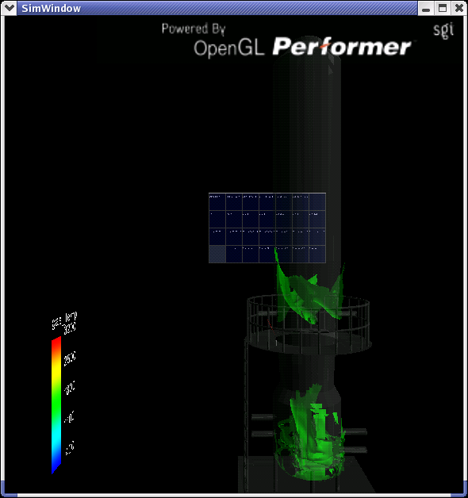 |
| 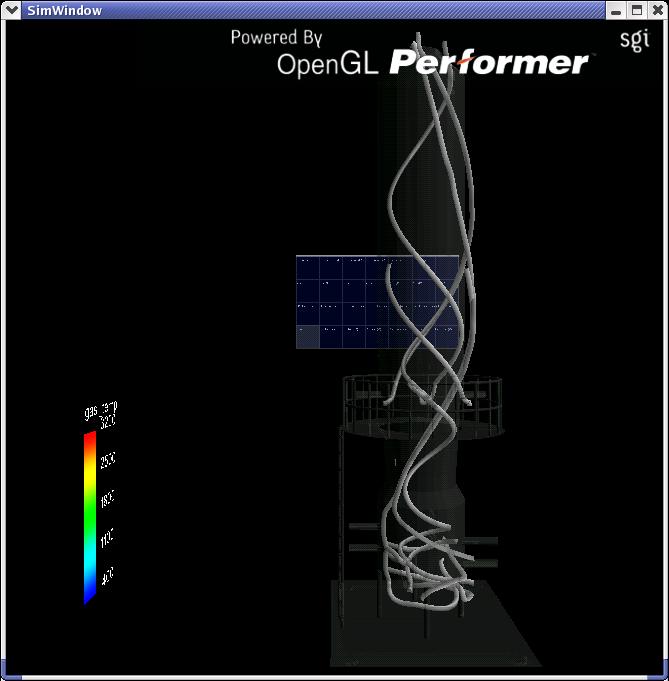 | PolydataThe Polydata category displays individual particle paths through the unit. The particle positions are predefined and originate from the file: $[VE_SUITE]/REI/particle.param |